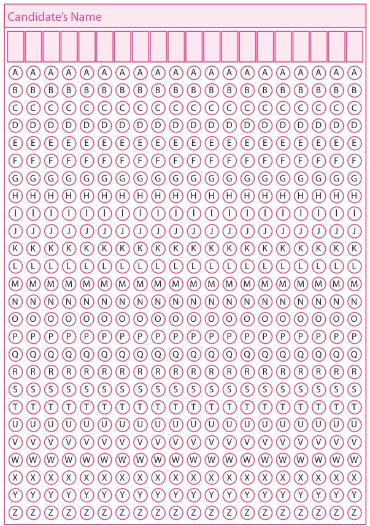

Exercise 5.2
Miscellaneous Practice problems
- Find HCF of 188 and 230 by Euclid's game.
- Write the numbers from 1 to 50. From that find the following.
- The numbers which are neither divisible by 2 nor 7.
- The prime numbers between 25 and 40.
- All square numbers upto 50.
- Complete the following pattern
\(1+2+3+4 = 10\)
\(2+3+4+5 = 14\)
\(\square+4+5+6 = \square\)
\(4+5+6+\square = \square\)
\(1+3+5+7 = 16\)
\(\square+5+7+9 = 24\)
\(5+7+9+\square = \square\)
\(7+9+\square+13 = \square\)
- AB, DEF, HIJK, \(\square\), STUVWX
- 20, 19, 17, \(\square\), 10, 5
- Complete the table by using the following instructions.

A: It is the 6th term in the Fibonacci sequence.
B: The predecessor of 2.
C: LCM of 2 and 3.
D: HCF of 6 and 20
E: The reciprocal of \(1/5\).
F: The opposite number of \(-7\).
G: The first composite number.
H: Area of a square of side 3 cm.
I: The number of lines of symmetry of an equilateral triangle.
After completing the table, what do you observe? Discuss.
- Assign the number for English alphabets as 1 for A, 2 for B upto 26 for Z.
Find the meaning of 7 15 15 4 13 15 18 14 9 14 7
- Replace the letter by symbols as + for A, \(-\) for B, \(\times\) for C and \(\div\) for D. Find the answer for the pattern 4B3C5A30D2 by doing the given operations.
- Observe the pattern and find the word by hiding the numbers 1H2O3W 4A5R6E 7Y8O9U?
- Arrange the following from the eldest to the youngest. What do you get?

Challenge problems
- Prepare a daily time schedule for evening study at home.
- Observe the geometrical pattern and answer the following questions

- Write down the number of sticks used in each of the iterative pattern.
- Draw the next figure in the pattern also find the total number sticks used in it.
- Find HCF of 28,35,42 by Euclid's game.
- Follow the given instructions to fill your name in the OMR sheet.

- The name should be written in capital letters from left to right.
- One alphabet is to be entered in each box.
- If any empty boxes are there at the end they should be left blank.
- Ball point pen is to be used for shading the bubbles for the corresponding alphabets.
- Consider the Postal Index Number (PIN) written on the letters as follows: 604506; 604516; 604560; 604506; 604516; 604516; 604560; 604516; 604505; 604470; 604515; 604520; 604303; 604509; 604470. How the letters can be sorted as per Postal Index Numbers?